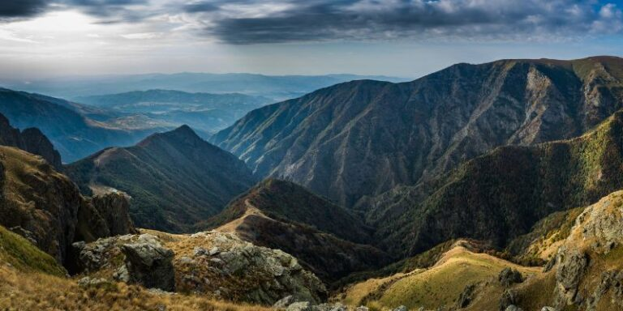
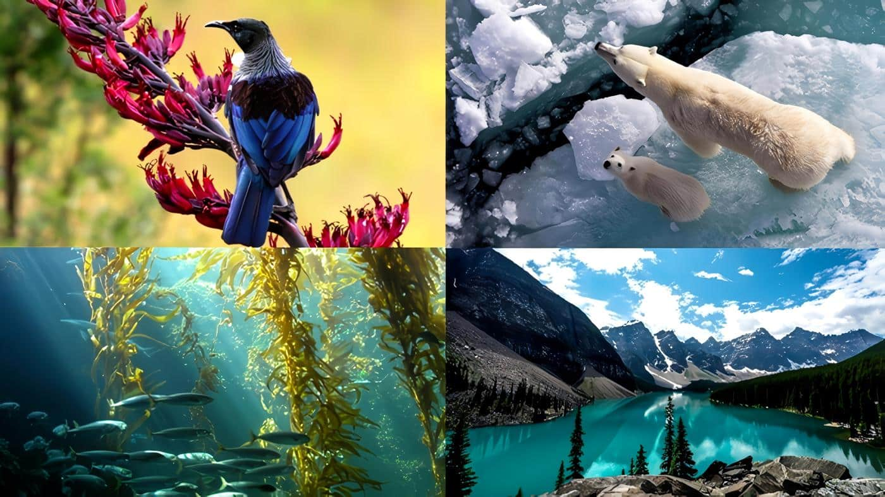
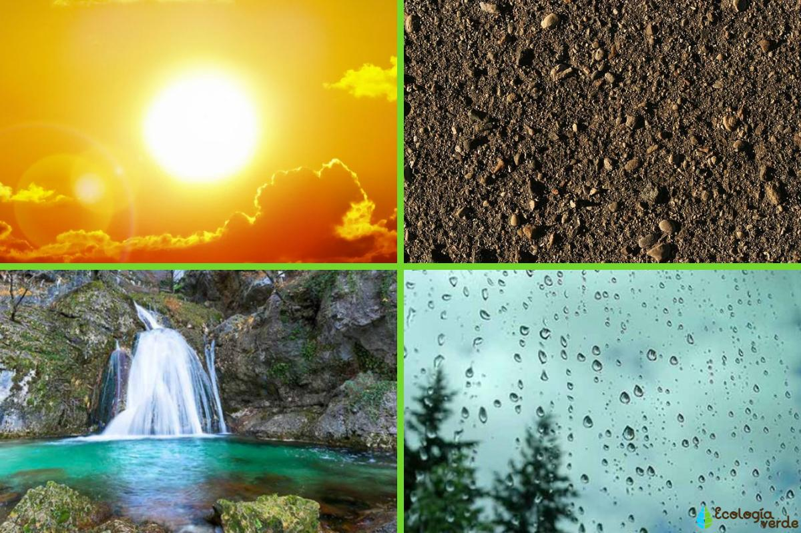
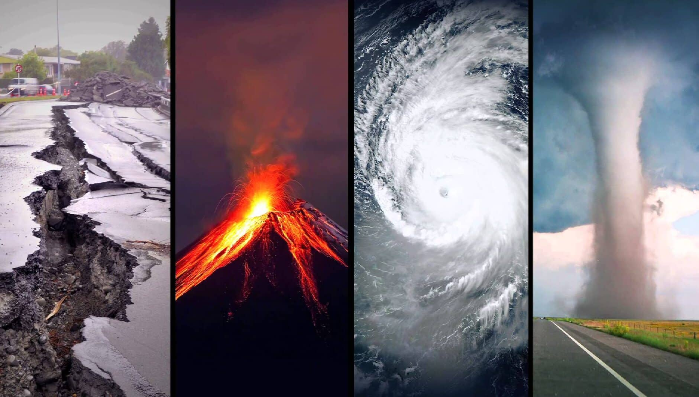

¿Qué es esta página?
¡Bienvenid@ a la página web de Hijos de Eratóstenes!
Somos un grupo de estudiantes del COBACH 28 del estado de San Luis Potosí, México. Nos encontramos realizando
un proyecto para la capacitación de TICS (Tecnologías de la Información y la Comunicación) que consiste en la
creación de contenido educativo sobre geografía, teniendo este mismo características como: la atractividad visual,
un fácil entendimiento, la presencia de humor referente a las tendencias actuales de las redes sociales, el uso del inglés
y el español en conjunto, así como el dinamismo.
Estaremos publicando en Instagram, TikTok y YouTube, cada una de estas plataformas mostrará un diferente formato
con respecto al material educativo, es decir, carruseles de imágenes, videos cortos y podcast.
Como podrás darte cuenta, la presente página cuenta con 3 secciones diferentes: artículos, acerca de y media. Ahora te
encuentras en acerca de. Las otras dos páginas presentes cuentan con la información recabada para la creación de nuestro
material, así como las más recientes publicaciones referentes a cada una de nuestras plataformas, es decir, la sección de
artículos y la sección de media, respectivamente.
¡Esperemos que disfrutes de tu estancia en nuestra página web!
Artículos
Instituciones de Geografía en México

Introducción
La geografía es una ciencia fundamental para comprender el territorio, los recursos naturales, la población y los fenómenos que ocurren en el espacio donde vivimos. En México, diversas instituciones se encargan de estudiar, analizar y generar información geográfica que permite tomar decisiones importantes para el desarrollo del país. Estas instituciones no solo producen mapas, sino que también investigan el clima, los riesgos naturales, la biodiversidad y el crecimiento de las ciudades.
INEGI
 Una de las instituciones más importantes es el Instituto Nacional de Estadística y Geografía (INEGI). Este organismo autónomo del Estado mexicano se encarga de realizar los censos de población y vivienda, además de generar información estadística y cartográfica del país. Gracias a sus estudios se pueden conocer datos sobre cuántas personas viven en México, cómo se distribuyen en el territorio y cuáles son las características económicas y sociales de cada región. Sus mapas y bases de datos son esenciales para planificar carreteras, escuelas, hospitales y programas públicos.
Una de las instituciones más importantes es el Instituto Nacional de Estadística y Geografía (INEGI). Este organismo autónomo del Estado mexicano se encarga de realizar los censos de población y vivienda, además de generar información estadística y cartográfica del país. Gracias a sus estudios se pueden conocer datos sobre cuántas personas viven en México, cómo se distribuyen en el territorio y cuáles son las características económicas y sociales de cada región. Sus mapas y bases de datos son esenciales para planificar carreteras, escuelas, hospitales y programas públicos.
Instituto de Geografía de la UNAM
 Otra institución clave es el Instituto de Geografía de la UNAM, que forma parte de la Universidad Nacional Autónoma de México (UNAM). Este centro de investigación desarrolla estudios sobre cambio climático, riesgos naturales, ordenamiento territorial y dinámica urbana. Además, forma especialistas en geografía y publica investigaciones científicas que ayudan a comprender mejor fenómenos como los sismos, las sequías o el crecimiento acelerado de las ciudades.
Otra institución clave es el Instituto de Geografía de la UNAM, que forma parte de la Universidad Nacional Autónoma de México (UNAM). Este centro de investigación desarrolla estudios sobre cambio climático, riesgos naturales, ordenamiento territorial y dinámica urbana. Además, forma especialistas en geografía y publica investigaciones científicas que ayudan a comprender mejor fenómenos como los sismos, las sequías o el crecimiento acelerado de las ciudades.
CENAPRED
 En el ámbito de la prevención de riesgos destaca el Centro Nacional de Prevención de Desastres (CENAPRED). Esta institución analiza amenazas naturales como terremotos y erupciones volcánicas, y monitorea volcanes activos como el Popocatépetl. Su labor es fundamental en un país con alta actividad sísmica, ya que emite alertas y recomendaciones que contribuyen a reducir daños y proteger a la población.
En el ámbito de la prevención de riesgos destaca el Centro Nacional de Prevención de Desastres (CENAPRED). Esta institución analiza amenazas naturales como terremotos y erupciones volcánicas, y monitorea volcanes activos como el Popocatépetl. Su labor es fundamental en un país con alta actividad sísmica, ya que emite alertas y recomendaciones que contribuyen a reducir daños y proteger a la población.
CONABIO
 La protección del medio ambiente también está vinculada con la geografía. La Comisión Nacional para el Conocimiento y Uso de la Biodiversidad (CONABIO) genera información cartográfica sobre ecosistemas, especies y regiones naturales del país. México es considerado uno de los países con mayor biodiversidad en el mundo, por lo que conocer la distribución geográfica de plantas y animales resulta indispensable para su conservación y uso sustentable.
La protección del medio ambiente también está vinculada con la geografía. La Comisión Nacional para el Conocimiento y Uso de la Biodiversidad (CONABIO) genera información cartográfica sobre ecosistemas, especies y regiones naturales del país. México es considerado uno de los países con mayor biodiversidad en el mundo, por lo que conocer la distribución geográfica de plantas y animales resulta indispensable para su conservación y uso sustentable.
SEDATU
 Por su parte, la Secretaría de Desarrollo Agrario, Territorial y Urbano (SEDATU) se encarga del ordenamiento territorial y la planeación urbana. Sus funciones incluyen regular el uso del suelo, impulsar programas de vivienda y promover un crecimiento urbano más organizado. Una adecuada planeación geográfica ayuda a evitar problemas como asentamientos irregulares, falta de servicios básicos y deterioro ambiental.
Por su parte, la Secretaría de Desarrollo Agrario, Territorial y Urbano (SEDATU) se encarga del ordenamiento territorial y la planeación urbana. Sus funciones incluyen regular el uso del suelo, impulsar programas de vivienda y promover un crecimiento urbano más organizado. Una adecuada planeación geográfica ayuda a evitar problemas como asentamientos irregulares, falta de servicios básicos y deterioro ambiental.
En conjunto, estas instituciones permiten comprender mejor el territorio mexicano y enfrentar los desafíos sociales, económicos y ambientales del país. La geografía, apoyada por estos organismos, se convierte en una herramienta esencial para el desarrollo sostenible, la prevención de desastres y la conservación de los recursos naturales.
Geographical Institutions in Mexico
Introduction
Geography is a fundamental science for understanding territory, natural resources, population, and the phenomena that occur in the space where we live. In Mexico, various institutions are responsible for studying, analyzing, and generating geographic information that allows important decisions to be made for the country's development. These institutions not only produce maps, but also research climate, natural hazards, biodiversity, and urban growth.
INEGI
One of the most important institutions is the National Institute of Statistics and Geography (INEGI). This autonomous body of the Mexican State conducts population and housing censuses and generates statistical and cartographic information about the country. Thanks to its studies, it is possible to know how many people live in Mexico, how they are distributed across the territory, and the economic and social characteristics of each region. Its maps and databases are essential for planning roads, schools, hospitals, and public programs.
Instituto de Geografía de la UNAM
Another key institution is the Institute of Geography of UNAM, which is part of the National Autonomous University of Mexico (UNAM). This research center develops studies on climate change, natural hazards, territorial planning, and urban dynamics. It also trains geography specialists and publishes scientific research that helps better understand phenomena such as earthquakes, droughts, and rapid urban growth.
CENAPRED
In the field of risk prevention, the National Center for Disaster Prevention (CENAPRED) plays an important role. This institution analyzes natural threats such as earthquakes and volcanic eruptions, and monitors active volcanoes such as Popocatépetl. Its work is fundamental in a country with high seismic activity, as it issues alerts and recommendations that help reduce damage and protect the population.
CONABIO
Environmental protection is also closely linked to geography. The National Commission for the Knowledge and Use of Biodiversity (CONABIO) generates cartographic information about ecosystems, species, and natural regions of the country. Mexico is considered one of the most biodiverse countries in the world, so understanding the geographic distribution of plants and animals is essential for their conservation and sustainable use.
SEDATU
The Ministry of Agrarian, Territorial, and Urban Development (SEDATU) is responsible for territorial planning and urban development. Its functions include regulating land use, promoting housing programs, and encouraging more organized urban growth. Proper geographic planning helps prevent problems such as informal settlements, lack of basic services, and environmental deterioration.
Together, these institutions make it possible to better understand Mexican territory and face the country’s social, economic, and environmental challenges. Supported by these organizations, geography becomes an essential tool for sustainable development, disaster prevention, and the conservation of natural resources.
La Demografía

¿Qué es?
 La demografía es la ciencia que estudia la población humana, su tamaño, estructura, distribución y evolución a lo largo del tiempo. Analiza fenómenos como los nacimientos, las defunciones y las migraciones para comprender cómo cambian las sociedades. Esta disciplina es fundamental para planear políticas públicas relacionadas con educación, salud, vivienda y empleo.
La demografía es la ciencia que estudia la población humana, su tamaño, estructura, distribución y evolución a lo largo del tiempo. Analiza fenómenos como los nacimientos, las defunciones y las migraciones para comprender cómo cambian las sociedades. Esta disciplina es fundamental para planear políticas públicas relacionadas con educación, salud, vivienda y empleo.
Etimología
La palabra demografía proviene del griego: demos, que significa “pueblo”, y graphos, que significa “descripción” o “estudio”. Por lo tanto, etimológicamente, demografía significa “descripción del pueblo”. El término comenzó a utilizarse de manera formal en el siglo XIX para referirse al estudio estadístico de la población.
Padre de la Demografía
 El padre de la demografía es considerado Ibn Jaldún, pensador, historiador y sociólogo del siglo XIV. En su obra Al-Muqaddimah, analizó el crecimiento de la población, la organización social, la economía y el desarrollo de las civilizaciones. Sus reflexiones sobre cómo las sociedades crecen, se fortalecen y eventualmente declinan lo convierten en uno de los primeros estudiosos en abordar fenómenos demográficos desde una perspectiva científica y social.
El padre de la demografía es considerado Ibn Jaldún, pensador, historiador y sociólogo del siglo XIV. En su obra Al-Muqaddimah, analizó el crecimiento de la población, la organización social, la economía y el desarrollo de las civilizaciones. Sus reflexiones sobre cómo las sociedades crecen, se fortalecen y eventualmente declinan lo convierten en uno de los primeros estudiosos en abordar fenómenos demográficos desde una perspectiva científica y social.
Tipos de Demografía
Existen distintos tipos de demografía. La demografía estática estudia la población en un momento determinado, analizando su tamaño, edad, sexo y distribución territorial. Por otro lado, la demografía dinámica estudia los cambios que experimenta la población a lo largo del tiempo, considerando factores como natalidad, mortalidad y migración.
También se distingue entre demografía cuantitativa y demografía cualitativa. La primera se enfoca en datos numéricos y estadísticas, mientras que la segunda analiza las características sociales, económicas y culturales de la población. Ambas perspectivas permiten comprender mejor la realidad y las necesidades de una sociedad.
En la actualidad, la demografía es una herramienta esencial para comprender fenómenos como el envejecimiento poblacional, el crecimiento urbano, los movimientos migratorios y los cambios en la estructura familiar. Gracias a esta ciencia, los gobiernos y organizaciones pueden tomar decisiones más informadas para mejorar la calidad de vida de la población.
Demography
What is Demography?
Demography is the science that studies the human population, its size, structure, distribution, and evolution over time. It analyzes phenomena such as births, deaths, and migration in order to understand how societies change. This discipline is essential for planning public policies related to education, health, housing, and employment.
Etymology
The word demography comes from Greek: demos, meaning “people,” and graphos, meaning “description” or “study.” Therefore, etymologically, demography means “description of the people.” The term began to be formally used in the 19th century to refer to the statistical study of population.
The Father of Demography
The father of demography is considered to be Ibn Khaldun, a 14th-century thinker, historian, and sociologist. In his work Al-Muqaddimah, he analyzed population growth, social organization, economics, and the development of civilizations. His reflections on how societies grow, strengthen, and eventually decline make him one of the earliest scholars to approach demographic phenomena from a scientific and social perspective.
Types of Demography
There are different types of demography. Static demography studies the population at a specific moment in time, analyzing its size, age, sex, and territorial distribution. Dynamic demography, on the other hand, studies the changes that population experiences over time, considering factors such as birth rates, mortality rates, and migration.
A distinction is also made between quantitative demography and qualitative demography. The first focuses on numerical data and statistics, while the second analyzes the social, economic, and cultural characteristics of the population. Both perspectives are necessary to obtain a complete understanding of demographic reality.
Today, demography is an essential tool for understanding phenomena such as population aging, urban growth, migration movements, and changes in family structure. Thanks to this science, governments and organizations can make more informed decisions to improve people’s quality of life.
Dinámica Poblacional

¿Qué es?
 La dinámica poblacional es la rama de la demografía que estudia los cambios que experimenta una población a lo largo del tiempo. Se enfoca en analizar cómo y por qué aumenta o disminuye el número de habitantes en un determinado territorio.
La dinámica poblacional es la rama de la demografía que estudia los cambios que experimenta una población a lo largo del tiempo. Se enfoca en analizar cómo y por qué aumenta o disminuye el número de habitantes en un determinado territorio.
Factores Influyentes
Los tres factores principales que influyen en la dinámica poblacional son la natalidad, la mortalidad y la migración. La natalidad se refiere al número de nacimientos en una población; la mortalidad, al número de defunciones; y la migración, al movimiento de personas que entran o salen de un lugar.
 Cuando la natalidad es mayor que la mortalidad, la población tiende a crecer. En cambio, cuando la mortalidad supera a la natalidad, la población puede disminuir. La migración también puede modificar significativamente el tamaño y la estructura de una población, ya sea por la llegada de nuevos habitantes o por la salida de personas hacia otros lugares.
Cuando la natalidad es mayor que la mortalidad, la población tiende a crecer. En cambio, cuando la mortalidad supera a la natalidad, la población puede disminuir. La migración también puede modificar significativamente el tamaño y la estructura de una población, ya sea por la llegada de nuevos habitantes o por la salida de personas hacia otros lugares.
La dinámica poblacional también estudia la estructura por edad y sexo, ya que estos elementos influyen en el crecimiento futuro. Por ejemplo, una población con mayoría de jóvenes tiene mayor potencial de crecimiento que una población envejecida.
Comprender la dinámica poblacional es fundamental para planear servicios como educación, salud, vivienda y empleo. Además, permite anticipar retos como el envejecimiento de la población, la sobrepoblación o la disminución de habitantes en ciertas regiones.
Population Dynamics
What is Population Dynamics?
Population dynamics is the branch of demography that studies the changes a population experiences over time. It focuses on analyzing how and why the number of people in a specific territory increases or decreases.
Influential Factors
The three main factors that influence population dynamics are birth rate, death rate, and migration. Birth rate refers to the number of births in a population; death rate refers to the number of deaths; and migration refers to the movement of people entering or leaving a place.
When the birth rate is higher than the death rate, the population tends to grow. On the other hand, when the death rate exceeds the birth rate, the population may decline. Migration can also significantly modify the size and structure of a population, either through the arrival of new inhabitants or the departure of people to other regions.
Population dynamics also examines age and sex structure, since these elements influence future growth. For example, a population with a majority of young people has greater growth potential than an aging population.
Understanding population dynamics is essential for planning services such as education, healthcare, housing, and employment. It also helps anticipate challenges such as population aging, overpopulation, or population decline in certain regions.
La Geografía del Internet

¿Qué es la geografía del internet?
 La geografía del internet estudia cómo las redes digitales se distribuyen y organizan en el mundo. Aunque el internet parece intangible, está construido sobre infraestructura física como cables, servidores y satélites que conectan distintas regiones del planeta.
La geografía del internet estudia cómo las redes digitales se distribuyen y organizan en el mundo. Aunque el internet parece intangible, está construido sobre infraestructura física como cables, servidores y satélites que conectan distintas regiones del planeta.
Infraestructura digital
El internet depende de un amplio sistema físico. Cables submarinos atraviesan los océanos, centros de datos almacenan grandes cantidades de información y antenas distribuyen señales inalámbricas. Estos elementos forman el “paisaje” del mundo digital.
 Algunas regiones como América del Norte, Europa y Asia Oriental concentran la mayor parte de esta infraestructura, mientras que otras zonas aún enfrentan limitaciones de conectividad. Esta distribución desigual refleja diferencias tecnológicas y económicas a nivel global.
Algunas regiones como América del Norte, Europa y Asia Oriental concentran la mayor parte de esta infraestructura, mientras que otras zonas aún enfrentan limitaciones de conectividad. Esta distribución desigual refleja diferencias tecnológicas y económicas a nivel global.
Fronteras y control digital
Aunque el internet se percibe como un espacio sin fronteras, los gobiernos imponen regulaciones y controles. Algunos países restringen el acceso a ciertas plataformas o contenidos, creando límites virtuales dentro de la red global.
La soberanía de los datos se ha convertido en un tema importante, planteando preguntas sobre quién controla la información, dónde se almacena y qué leyes se aplican en el entorno digital.
La brecha digital
No todas las personas tienen el mismo acceso al internet. La brecha digital se refiere a la diferencia entre quienes cuentan con acceso rápido y confiable y quienes no. Factores como el ingreso, la educación y la ubicación geográfica influyen en esta desigualdad.
Las zonas rurales suelen tener menor conectividad que las urbanas, lo que limita oportunidades educativas, de comunicación y desarrollo económico.
Flujos de información
La información viaja a través del internet como corrientes en un mapa. Datos, mensajes, videos y transacciones circulan constantemente por rutas optimizadas para la velocidad y la eficiencia.
Las grandes empresas tecnológicas actúan como nodos centrales en esta red, concentrando grandes volúmenes de tráfico e influencia.
Cultura y espacios digitales
El internet también ha creado nuevos espacios culturales. Comunidades en línea, redes sociales y foros funcionan como territorios digitales donde las personas interactúan y comparten ideas.
Estos espacios no están definidos por fronteras físicas, sino por el idioma, los intereses y los algoritmos, formando regiones únicas dentro del mundo digital.
Conclusión
La geografía del internet demuestra que incluso en la era digital, el espacio y la ubicación siguen siendo importantes. Comprender su estructura ayuda a explicar desigualdades globales, dinámicas de poder e intercambios culturales en un mundo interconectado.
The Geography of the Internet
What is the Geography of the Internet?
The geography of the internet studies how digital networks are distributed and organized across the world. Although the internet may seem intangible, it is built upon physical infrastructure such as cables, servers, and satellites that connect different regions of the planet.
Digital Infrastructure
The internet depends on a vast physical system. Submarine cables cross oceans, data centers store massive amounts of information, and antennas distribute wireless signals. These elements form the “landscape” of the digital world.
Some regions like North America, Europe, and East Asia concentrate most of this infrastructure, while other areas still face limited connectivity. This unequal distribution reflects global technological and economic differences.
Digital Borders and Control
Although the internet is often seen as borderless, governments impose regulations and controls. Some countries restrict access to certain platforms or content, creating virtual boundaries within the global network.
Data sovereignty has become an important issue, raising questions about who controls information, where it is stored, and which laws apply in the digital space.
The Digital Divide
Not everyone has equal access to the internet. The digital divide refers to the gap between those who have reliable, fast access and those who do not. Factors such as income, education, and geographic location play a key role.
Rural areas often have less connectivity than urban ones, limiting opportunities in education, communication, and economic development.
Flows of Information
Information travels through the internet like currents across a map. Data, messages, videos, and transactions move constantly through optimized routes designed for speed and efficiency.
Major technology companies act as central nodes in this network, concentrating large amounts of traffic and influence.
Digital Culture and Spaces
The internet has also created new cultural spaces. Online communities, social media platforms, and forums act as digital territories where people interact and share ideas.
These spaces are not defined by physical borders but by language, interests, and algorithms, forming unique regions within the digital world.
Conclusion
The geography of the internet shows that even in a digital age, space and location still matter. Understanding its structure helps explain global inequalities, power dynamics, and cultural exchange in our interconnected world.
Historia de la Clasificación Climática Köppen-Geiger

Introducción
La clasificación climática es una herramienta fundamental en geografía y ciencias ambientales para entender las diferentes condiciones climáticas que existen en la Tierra. Una de las clasificaciones más conocidas y utilizadas a nivel mundial es el sistema Köppen-Geiger. Desarrollado por los climatólogos alemanes Wladimir Köppen y Rudolf Geiger, esta clasificación ha sido clave para analizar y representar los climas del planeta, permitiendo comprender las variaciones climáticas y sus impactos en los ecosistemas, las actividades humanas y el cambio climático.
1. Orígenes del Sistema: Wladimir Köppen
El sistema de clasificación climática fue ideado por Wladimir Köppen, un climatólogo y meteorólogo alemán nacido en 1846. Köppen, quien tenía una sólida formación en botánica y meteorología, buscaba desarrollar una forma de clasificar los climas de la Tierra que estuviera basada en la distribución y características de la vegetación natural.

En 1884, Köppen publicó la primera versión de su sistema de clasificación, el cual agrupaba los climas en cinco tipos principales (A, B, C, D, E), basados en las temperaturas y precipitaciones anuales en diferentes zonas del mundo. Su objetivo era establecer una relación directa entre los tipos de clima y los tipos de vegetación que predominan en cada región. A lo largo de los años, Köppen refinó su sistema, introduciendo subcategorías para hacerlo más detallado y preciso.
2. El Sistema Original de Köppen
El sistema original de Köppen se basaba principalmente en tres factores:
- Temperatura promedio anual: Esto incluye tanto las temperaturas de invierno como de verano.
- Precipitación anual: Las lluvias juegan un papel esencial en la determinación de los tipos de clima.
- Variación estacional de la temperatura y la precipitación: Las estaciones del año, como el verano y el invierno, influyen de manera significativa en las condiciones climáticas.
Según este sistema, Köppen clasificó los climas en cinco grandes grupos:
- A (Climas cálidos): Zonas tropicales, sin estación fría.
- B (Climas secos): Desiertos y estepas, con escasa precipitación.
- C (Climas templados): Zonas con estaciones bien definidas, como los climas mediterráneos o oceánicos.
- D (Climas fríos): Climas fríos con inviernos largos y severos.
- E (Climas polares): Climas extremadamente fríos, sin estación cálida.
3. La Contribución de Rudolf Geiger
Aunque el sistema de Köppen fue muy influyente, fue el climatólogo Rudolf Geiger quien realizó una revisión importante en la década de 1950. Geiger no solo ayudó a refinar y expandir el trabajo de Köppen, sino que también añadió una mayor precisión al sistema, tomando en cuenta la variabilidad estacional en la distribución de las precipitaciones y la temperatura.

En 1954, Geiger publicó su propio trabajo en el que introdujo mejoras en la clasificación climática, particularmente en la interpretación de las zonas intermedias. A partir de este momento, el sistema pasó a conocerse como Köppen-Geiger, en honor a ambos climatólogos. La clasificación Geiger-Köppen también incluyó el uso de mapas climáticos más detallados y precisos, que ayudaron a visualizar los patrones climáticos a nivel global.
4. El Sistema Köppen-Geiger Hoy
El sistema Köppen-Geiger ha evolucionado a lo largo del tiempo y sigue siendo la herramienta más utilizada para clasificar los climas en todo el mundo. Hoy en día, el sistema se emplea en múltiples áreas del conocimiento, incluyendo:
- Geografía: Para estudiar la distribución de los climas en la Tierra.
- Agronomía: Para determinar qué cultivos pueden crecer en diferentes regiones climáticas.
- Ecología: Para comprender cómo las plantas y los animales se adaptan a las diferentes condiciones climáticas.
- Cambio climático: Para estudiar los efectos del cambio climático en los patrones de temperatura y precipitación.
Además, los avances en las tecnologías de modelado climático y la observación satelital han permitido refinar aún más la clasificación y hacerla más precisa en su aplicación.
5. La Importancia del Sistema Köppen-Geiger
El sistema de clasificación Köppen-Geiger tiene un impacto enorme no solo en las ciencias geográficas, sino también en áreas como:
- Urbanismo: La planificación de ciudades depende de comprender los climas locales.
- Turismo: Los destinos turísticos a menudo se eligen en función del tipo de clima.
- Agricultura: Los agricultores utilizan la clasificación para elegir cultivos adecuados según el clima de la región.
- Energía: El clima también es un factor determinante en la generación de energía, especialmente en energías renovables como la solar y la eólica.
Conclusión
La clasificación climática Köppen-Geiger ha sido fundamental para la ciencia del clima durante más de un siglo. Gracias a la visión de Wladimir Köppen y las mejoras de Rudolf Geiger, hoy podemos entender mejor los patrones climáticos globales, sus variaciones y cómo se relacionan con los ecosistemas y las actividades humanas. Este sistema sigue siendo una de las herramientas más valiosas para los científicos, educadores y profesionales que estudian el clima y el medio ambiente, ayudándonos a comprender cómo las condiciones climáticas influyen en la vida en la Tierra.
Introducción
La clasificación climática es una herramienta fundamental en geografía y ciencias ambientales para entender las diferentes condiciones climáticas que existen en la Tierra. Una de las clasificaciones más conocidas y utilizadas a nivel mundial es el sistema Köppen-Geiger. Desarrollado por los climatólogos alemanes Wladimir Köppen y Rudolf Geiger, esta clasificación ha sido clave para analizar y representar los climas del planeta, permitiendo comprender las variaciones climáticas y sus impactos en los ecosistemas, las actividades humanas y el cambio climático.
1. Orígenes del Sistema: Wladimir Köppen
El sistema de clasificación climática fue ideado por Wladimir Köppen, un climatólogo y meteorólogo alemán nacido en 1846. Köppen, quien tenía una sólida formación en botánica y meteorología, buscaba desarrollar una forma de clasificar los climas de la Tierra que estuviera basada en la distribución y características de la vegetación natural.
En 1884, Köppen publicó la primera versión de su sistema de clasificación, el cual agrupaba los climas en cinco tipos principales (A, B, C, D, E), basados en las temperaturas y precipitaciones anuales en diferentes zonas del mundo. Su objetivo era establecer una relación directa entre los tipos de clima y los tipos de vegetación que predominan en cada región. A lo largo de los años, Köppen refinó su sistema, introduciendo subcategorías para hacerlo más detallado y preciso.
2. El Sistema Original de Köppen
El sistema original de Köppen se basaba principalmente en tres factores:
- Temperatura promedio anual: Esto incluye tanto las temperaturas de invierno como de verano.
- Precipitación anual: Las lluvias juegan un papel esencial en la determinación de los tipos de clima.
- Variación estacional de la temperatura y la precipitación: Las estaciones del año, como el verano y el invierno, influyen de manera significativa en las condiciones climáticas.
Según este sistema, Köppen clasificó los climas en cinco grandes grupos:
- A (Climas cálidos): Zonas tropicales, sin estación fría.
- B (Climas secos): Desiertos y estepas, con escasa precipitación.
- C (Climas templados): Zonas con estaciones bien definidas, como los climas mediterráneos o oceánicos.
- D (Climas fríos): Climas fríos con inviernos largos y severos.
- E (Climas polares): Climas extremadamente fríos, sin estación cálida.
3. La Contribución de Rudolf Geiger
Aunque el sistema de Köppen fue muy influyente, fue el climatólogo Rudolf Geiger quien realizó una revisión importante en la década de 1950. Geiger no solo ayudó a refinar y expandir el trabajo de Köppen, sino que también añadió una mayor precisión al sistema, tomando en cuenta la variabilidad estacional en la distribución de las precipitaciones y la temperatura.
En 1954, Geiger publicó su propio trabajo en el que introdujo mejoras en la clasificación climática, particularmente en la interpretación de las zonas intermedias. A partir de este momento, el sistema pasó a conocerse como Köppen-Geiger, en honor a ambos climatólogos. La clasificación Geiger-Köppen también incluyó el uso de mapas climáticos más detallados y precisos, que ayudaron a visualizar los patrones climáticos a nivel global.
4. El Sistema Köppen-Geiger Hoy
El sistema Köppen-Geiger ha evolucionado a lo largo del tiempo y sigue siendo la herramienta más utilizada para clasificar los climas en todo el mundo. Hoy en día, el sistema se emplea en múltiples áreas del conocimiento, incluyendo:
- Geografía: Para estudiar la distribución de los climas en la Tierra.
- Agronomía: Para determinar qué cultivos pueden crecer en diferentes regiones climáticas.
- Ecología: Para comprender cómo las plantas y los animales se adaptan a las diferentes condiciones climáticas.
- Cambio climático: Para estudiar los efectos del cambio climático en los patrones de temperatura y precipitación.
Además, los avances en las tecnologías de modelado climático y la observación satelital han permitido refinar aún más la clasificación y hacerla más precisa en su aplicación.
5. La Importancia del Sistema Köppen-Geiger
El sistema de clasificación Köppen-Geiger tiene un impacto enorme no solo en las ciencias geográficas, sino también en áreas como:
- Urbanismo: La planificación de ciudades depende de comprender los climas locales.
- Turismo: Los destinos turísticos a menudo se eligen en función del tipo de clima.
- Agricultura: Los agricultores utilizan la clasificación para elegir cultivos adecuados según el clima de la región.
- Energía: El clima también es un factor determinante en la generación de energía, especialmente en energías renovables como la solar y la eólica.
Conclusión
La clasificación climática Köppen-Geiger ha sido fundamental para la ciencia del clima durante más de un siglo. Gracias a la visión de Wladimir Köppen y las mejoras de Rudolf Geiger, hoy podemos entender mejor los patrones climáticos globales, sus variaciones y cómo se relacionan con los ecosistemas y las actividades humanas. Este sistema sigue siendo una de las herramientas más valiosas para los científicos, educadores y profesionales que estudian el clima y el medio ambiente, ayudándonos a comprender cómo las condiciones climáticas influyen en la vida en la Tierra.
History of the Köppen-Geiger Climate Classification
Introduction
Climate classification is a fundamental tool in geography and environmental sciences to understand the different climate conditions that exist on Earth. One of the most well-known and widely used classification systems worldwide is the Köppen-Geiger system. Developed by German climatologists Wladimir Köppen and Rudolf Geiger, this classification has been key in analyzing and representing the climates of the planet, allowing us to understand climate variations and their impacts on ecosystems, human activities, and climate change.
1. Origins of the System: Wladimir Köppen
The climate classification system was devised by Wladimir Köppen, a German climatologist and meteorologist born in 1846. Köppen, who had a strong background in botany and meteorology, sought to develop a way of classifying Earth's climates based on the distribution and characteristics of natural vegetation.
In 1884, Köppen published the first version of his classification system, which grouped climates into five main types (A, B, C, D, E), based on annual temperature and precipitation levels in different regions of the world. His goal was to establish a direct relationship between climate types and vegetation types that dominate each region. Over the years, Köppen refined his system, introducing subcategories to make it more detailed and accurate.
2. The Original Köppen System
The original Köppen system was based primarily on three factors:
- Average annual temperature: This includes both winter and summer temperatures.
- Annual precipitation: Rainfall plays an essential role in determining climate types.
- Seasonal variation in temperature and precipitation: The seasons of the year, such as summer and winter, significantly influence climate conditions.
According to this system, Köppen classified climates into five main groups:
- A (Tropical Climates): Tropical zones, with no cold season.
- B (Dry Climates): Deserts and steppes, with low precipitation.
- C (Temperate Climates): Zones with well-defined seasons, such as Mediterranean or oceanic climates.
- D (Cold Climates): Cold climates with long, harsh winters.
- E (Polar Climates): Extremely cold climates, with no warm season.
3. Rudolf Geiger's Contribution
While Köppen's system was highly influential, it was the climatologist Rudolf Geiger who made significant revisions in the 1950s. Geiger not only helped refine and expand Köppen's work, but he also added greater precision to the system by taking seasonal variability in precipitation and temperature distribution into account.
In 1954, Geiger published his own work in which he introduced improvements to the climate classification, particularly in the interpretation of intermediate zones. From this point on, the system came to be known as Köppen-Geiger, in honor of both climatologists. The Köppen-Geiger classification also included the use of more detailed and accurate climatic maps to visualize climate patterns on a global scale.
4. The Köppen-Geiger System Today
The Köppen-Geiger system has evolved over time and remains the most widely used tool for classifying climates worldwide. Today, the system is employed in various fields, including:
- Geography: To study the distribution of climates on Earth.
- Agronomy: To determine which crops can grow in different climate regions.
- Ecology: To understand how plants and animals adapt to different climate conditions.
- Climate Change: To study the effects of climate change on temperature and precipitation patterns.
Additionally, advancements in climate modeling and satellite observation technologies have allowed for further refinement of the classification and made it more precise in its application.
5. The Importance of the Köppen-Geiger System
The Köppen-Geiger classification system has had a tremendous impact not only in geographical sciences but also in fields such as:
- Urban Planning: City planning depends on understanding local climates.
- Tourism: Tourist destinations are often chosen based on climate type.
- Agriculture: Farmers use the classification to select crops that are suitable for the climate of the region.
- Energy: Climate is also a key factor in energy generation, especially in renewable energy sources like solar and wind energy.
Conclusion
The Köppen-Geiger climate classification system has been fundamental to climate science for over a century. Thanks to the vision of Wladimir Köppen and the improvements of Rudolf Geiger, we can now better understand global climate patterns, their variations, and how they relate to ecosystems and human activities. This system remains one of the most valuable tools for scientists, educators, and professionals studying climate and the environment, helping us understand how climate conditions influence life on Earth.
Introduction
Climate classification is a fundamental tool in geography and environmental sciences to understand the different climate conditions that exist on Earth. One of the most well-known and widely used classification systems worldwide is the Köppen-Geiger system. Developed by German climatologists Wladimir Köppen and Rudolf Geiger, this classification has been key in analyzing and representing the climates of the planet, allowing us to understand climate variations and their impacts on ecosystems, human activities, and climate change.
1. Origins of the System: Wladimir Köppen
The climate classification system was devised by Wladimir Köppen, a German climatologist and meteorologist born in 1846. Köppen, who had a strong background in botany and meteorology, sought to develop a way of classifying Earth's climates based on the distribution and characteristics of natural vegetation.
In 1884, Köppen published the first version of his classification system, which grouped climates into five main types (A, B, C, D, E), based on annual temperature and precipitation levels in different regions of the world. His goal was to establish a direct relationship between climate types and vegetation types that dominate each region. Over the years, Köppen refined his system, introducing subcategories to make it more detailed and accurate.
2. The Original Köppen System
The original Köppen system was based primarily on three factors:
- Average annual temperature: This includes both winter and summer temperatures.
- Annual precipitation: Rainfall plays an essential role in determining climate types.
- Seasonal variation in temperature and precipitation: The seasons of the year, such as summer and winter, significantly influence climate conditions.
According to this system, Köppen classified climates into five main groups:
- A (Tropical Climates): Tropical zones, with no cold season.
- B (Dry Climates): Deserts and steppes, with low precipitation.
- C (Temperate Climates): Zones with well-defined seasons, such as Mediterranean or oceanic climates.
- D (Cold Climates): Cold climates with long, harsh winters.
- E (Polar Climates): Extremely cold climates, with no warm season.
3. Rudolf Geiger's Contribution
While Köppen's system was highly influential, it was the climatologist Rudolf Geiger who made significant revisions in the 1950s. Geiger not only helped refine and expand Köppen's work, but he also added greater precision to the system by taking seasonal variability in precipitation and temperature distribution into account.
In 1954, Geiger published his own work in which he introduced improvements to the climate classification, particularly in the interpretation of intermediate zones. From this point on, the system came to be known as Köppen-Geiger, in honor of both climatologists. The Köppen-Geiger classification also included the use of more detailed and accurate climatic maps to visualize climate patterns on a global scale.
4. The Köppen-Geiger System Today
The Köppen-Geiger system has evolved over time and remains the most widely used tool for classifying climates worldwide. Today, the system is employed in various fields, including:
- Geography: To study the distribution of climates on Earth.
- Agronomy: To determine which crops can grow in different climate regions.
- Ecology: To understand how plants and animals adapt to different climate conditions.
- Climate Change: To study the effects of climate change on temperature and precipitation patterns.
Additionally, advancements in climate modeling and satellite observation technologies have allowed for further refinement of the classification and made it more precise in its application.
5. The Importance of the Köppen-Geiger System
The Köppen-Geiger classification system has had a tremendous impact not only in geographical sciences but also in fields such as:
- Urban Planning: City planning depends on understanding local climates.
- Tourism: Tourist destinations are often chosen based on climate type.
- Agriculture: Farmers use the classification to select crops that are suitable for the climate of the region.
- Energy: Climate is also a key factor in energy generation, especially in renewable energy sources like solar and wind energy.
Conclusion
The Köppen-Geiger climate classification system has been fundamental to climate science for over a century. Thanks to the vision of Wladimir Köppen and the improvements of Rudolf Geiger, we can now better understand global climate patterns, their variations, and how they relate to ecosystems and human activities. This system remains one of the most valuable tools for scientists, educators, and professionals studying climate and the environment, helping us understand how climate conditions influence life on Earth.
Componentes y Cómo Funciona la Clasificación Climática Köppen-Geiger
Introducción
El sistema de clasificación climática Köppen-Geiger es uno de los métodos más utilizados para categorizar los climas del mundo. Se basa en factores clave como la temperatura, la precipitación y sus variaciones estacionales. Comprender los componentes y cómo funciona el sistema es esencial para aquellos que estudian los patrones climáticos globales, así como su impacto en los ecosistemas, la agricultura y la vida humana.

1. Componentes Clave del Sistema Köppen-Geiger
El sistema de clasificación climática Köppen-Geiger está construido alrededor de varios componentes clave que definen los tipos de clima. Estos componentes son:
- Temperatura: Este es el principal factor para determinar el tipo de clima. Considera la temperatura promedio anual y las variaciones estacionales.
- Precipitación: Los patrones de precipitación, incluyendo tanto la cantidad como el momento de la lluvia o la nieve, juegan un papel crucial en la clasificación del clima.
- Estacionalidad: La variación entre las estaciones húmedas y secas, y las estaciones frías y cálidas, ayuda a determinar la zona climática específica dentro de la clasificación.
- Tipos de Vegetación: El sistema originalmente vinculaba los tipos de clima con las zonas de vegetación, facilitando la comprensión de qué tipos de plantas se adaptan a diferentes climas.
2. Los Tipos de Clima en el Sistema Köppen-Geiger
El sistema clasifica los climas de la Tierra en cinco grandes grupos de clima, cada uno con características específicas. Estos grupos son:
- A (Climas Tropicales): Estas regiones son cálidas durante todo el año, sin estación fría. Generalmente reciben altos niveles de precipitación, lo que favorece la formación de bosques densos y ecosistemas diversos.
- B (Climas Secos): Estos climas se caracterizan por la falta de precipitación. Incluyen desiertos y regiones semiáridas, con variaciones extremas de temperatura entre el día y la noche.
- C (Climas Templados): Estas regiones experimentan temperaturas moderadas, con cambios estacionales bien definidos entre veranos cálidos e inviernos fríos. La precipitación generalmente está bien distribuida durante el año.
- D (Climas Fríos): Estos climas tienen inviernos largos y severos con caídas significativas de temperatura. Se encuentran generalmente en latitudes más altas y están asociados con bosques boreales o tundra.
- E (Climas Polares): Estas áreas experimentan condiciones extremadamente frías, sin estación cálida. Se encuentran típicamente en los polos y tienen una precipitación muy baja, a menudo en forma de nieve.
3. Cómo Funciona el Sistema Köppen-Geiger
El sistema de clasificación Köppen-Geiger funciona asignando tipos de clima basados en una combinación de temperatura, precipitación y estacionalidad. Así es como funciona el sistema:
Paso 1: Cálculo de la Temperatura
El primer paso para determinar el clima es analizar los datos de temperatura. El sistema utiliza la temperatura promedio de cada mes del año para clasificar el clima. Las regiones con temperaturas consistentemente altas durante todo el año se clasifican como tropicales (Grupo A), mientras que las regiones con temperaturas más frías en invierno se clasifican como templadas (Grupo C) o frías (Grupo D).

Paso 2: Precipitación y Variación Estacional
Después de considerar la temperatura, el sistema analiza los patrones de precipitación. Las áreas con alta y consistente precipitación durante todo el año suelen clasificarse como tropicales (Grupo A) o templadas (Grupo C). Las regiones secas (Grupo B) tienen muy poca precipitación, y las zonas polares (Grupo E) reciben solo una cantidad mínima de humedad, generalmente en forma de nieve.

Paso 3: Variaciones Estacionales
La estacionalidad es un factor clave para definir los tipos de clima. Por ejemplo, los climas templados (Grupo C) tienen diferencias significativas entre las temperaturas de verano e invierno, mientras que los climas tropicales (Grupo A) se mantienen cálidos durante todo el año. En los climas secos (Grupo B), las estaciones húmedas y secas son muy marcadas, y en los climas fríos (Grupo D), los inviernos son largos y severos.
4. Subcategorías en el Sistema Köppen-Geiger
El sistema Köppen-Geiger se refina aún más con subcategorías para capturar condiciones climáticas más específicas. Estas subcategorías utilizan letras adicionales para representar condiciones climáticas particulares. Por ejemplo:
- Climas A pueden dividirse aún más en Af (selva tropical), Aw (sabana tropical), y Am (monzón tropical).
- Climas C pueden dividirse en Cfa (subtropical húmedo), Cfb (oceánico), y Csa (Mediterráneo).
- Climas B se dividen en BWh (desierto cálido), BWk (desierto frío), y BSh (semiárido cálido).
- Climas D pueden clasificarse como Dfc (subártico), Dfa (continental húmedo), y Df (climas continentales).
5. ¿Por Qué Es Importante el Sistema Köppen-Geiger?
El sistema de clasificación Köppen-Geiger no solo es esencial para comprender los climas de la Tierra, sino que también tiene aplicaciones prácticas en varias áreas:
- Agricultura: Comprender los tipos de clima ayuda a los agricultores a elegir los cultivos más adecuados para su región.
- Planificación Urbana: Los urbanistas utilizan los datos climáticos para diseñar edificios e infraestructura adecuados a las condiciones locales.
- Conservación Ambiental: El sistema ayuda a evaluar la biodiversidad y los impactos del cambio climático en los ecosistemas.
- Estudios Climáticos: Los científicos utilizan el sistema Köppen-Geiger para analizar las tendencias en el calentamiento global y predecir cómo podrían cambiar los climas en el futuro.
Conclusión
El sistema de clasificación climática Köppen-Geiger proporciona un marco valioso para comprender la diversidad de los climas del mundo. Al considerar factores clave como la temperatura, la precipitación y la estacionalidad, el sistema clasifica las regiones en tipos de clima distintos. La adición de subcategorías permite clasificaciones aún más detalladas, lo que lo convierte en una herramienta esencial para estudiar el clima, la agricultura, la ecología y el cambio ambiental.
Introducción
El sistema de clasificación climática Köppen-Geiger es uno de los métodos más utilizados para categorizar los climas del mundo. Se basa en factores clave como la temperatura, la precipitación y sus variaciones estacionales. Comprender los componentes y cómo funciona el sistema es esencial para aquellos que estudian los patrones climáticos globales, así como su impacto en los ecosistemas, la agricultura y la vida humana.
1. Componentes Clave del Sistema Köppen-Geiger
El sistema de clasificación climática Köppen-Geiger está construido alrededor de varios componentes clave que definen los tipos de clima. Estos componentes son:
- Temperatura: Este es el principal factor para determinar el tipo de clima. Considera la temperatura promedio anual y las variaciones estacionales.
- Precipitación: Los patrones de precipitación, incluyendo tanto la cantidad como el momento de la lluvia o la nieve, juegan un papel crucial en la clasificación del clima.
- Estacionalidad: La variación entre las estaciones húmedas y secas, y las estaciones frías y cálidas, ayuda a determinar la zona climática específica dentro de la clasificación.
- Tipos de Vegetación: El sistema originalmente vinculaba los tipos de clima con las zonas de vegetación, facilitando la comprensión de qué tipos de plantas se adaptan a diferentes climas.
2. Los Tipos de Clima en el Sistema Köppen-Geiger
El sistema clasifica los climas de la Tierra en cinco grandes grupos de clima, cada uno con características específicas. Estos grupos son:
- A (Climas Tropicales): Estas regiones son cálidas durante todo el año, sin estación fría. Generalmente reciben altos niveles de precipitación, lo que favorece la formación de bosques densos y ecosistemas diversos.
- B (Climas Secos): Estos climas se caracterizan por la falta de precipitación. Incluyen desiertos y regiones semiáridas, con variaciones extremas de temperatura entre el día y la noche.
- C (Climas Templados): Estas regiones experimentan temperaturas moderadas, con cambios estacionales bien definidos entre veranos cálidos e inviernos fríos. La precipitación generalmente está bien distribuida durante el año.
- D (Climas Fríos): Estos climas tienen inviernos largos y severos con caídas significativas de temperatura. Se encuentran generalmente en latitudes más altas y están asociados con bosques boreales o tundra.
- E (Climas Polares): Estas áreas experimentan condiciones extremadamente frías, sin estación cálida. Se encuentran típicamente en los polos y tienen una precipitación muy baja, a menudo en forma de nieve.
3. Cómo Funciona el Sistema Köppen-Geiger
El sistema de clasificación Köppen-Geiger funciona asignando tipos de clima basados en una combinación de temperatura, precipitación y estacionalidad. Así es como funciona el sistema:
Paso 1: Cálculo de la Temperatura
El primer paso para determinar el clima es analizar los datos de temperatura. El sistema utiliza la temperatura promedio de cada mes del año para clasificar el clima. Las regiones con temperaturas consistentemente altas durante todo el año se clasifican como tropicales (Grupo A), mientras que las regiones con temperaturas más frías en invierno se clasifican como templadas (Grupo C) o frías (Grupo D).
Paso 2: Precipitación y Variación Estacional
Después de considerar la temperatura, el sistema analiza los patrones de precipitación. Las áreas con alta y consistente precipitación durante todo el año suelen clasificarse como tropicales (Grupo A) o templadas (Grupo C). Las regiones secas (Grupo B) tienen muy poca precipitación, y las zonas polares (Grupo E) reciben solo una cantidad mínima de humedad, generalmente en forma de nieve.
Paso 3: Variaciones Estacionales
La estacionalidad es un factor clave para definir los tipos de clima. Por ejemplo, los climas templados (Grupo C) tienen diferencias significativas entre las temperaturas de verano e invierno, mientras que los climas tropicales (Grupo A) se mantienen cálidos durante todo el año. En los climas secos (Grupo B), las estaciones húmedas y secas son muy marcadas, y en los climas fríos (Grupo D), los inviernos son largos y severos.
4. Subcategorías en el Sistema Köppen-Geiger
El sistema Köppen-Geiger se refina aún más con subcategorías para capturar condiciones climáticas más específicas. Estas subcategorías utilizan letras adicionales para representar condiciones climáticas particulares. Por ejemplo:
- Climas A pueden dividirse aún más en Af (selva tropical), Aw (sabana tropical), y Am (monzón tropical).
- Climas C pueden dividirse en Cfa (subtropical húmedo), Cfb (oceánico), y Csa (Mediterráneo).
- Climas B se dividen en BWh (desierto cálido), BWk (desierto frío), y BSh (semiárido cálido).
- Climas D pueden clasificarse como Dfc (subártico), Dfa (continental húmedo), y Df (climas continentales).
5. ¿Por Qué Es Importante el Sistema Köppen-Geiger?
El sistema de clasificación Köppen-Geiger no solo es esencial para comprender los climas de la Tierra, sino que también tiene aplicaciones prácticas en varias áreas:
- Agricultura: Comprender los tipos de clima ayuda a los agricultores a elegir los cultivos más adecuados para su región.
- Planificación Urbana: Los urbanistas utilizan los datos climáticos para diseñar edificios e infraestructura adecuados a las condiciones locales.
- Conservación Ambiental: El sistema ayuda a evaluar la biodiversidad y los impactos del cambio climático en los ecosistemas.
- Estudios Climáticos: Los científicos utilizan el sistema Köppen-Geiger para analizar las tendencias en el calentamiento global y predecir cómo podrían cambiar los climas en el futuro.
Conclusión
El sistema de clasificación climática Köppen-Geiger proporciona un marco valioso para comprender la diversidad de los climas del mundo. Al considerar factores clave como la temperatura, la precipitación y la estacionalidad, el sistema clasifica las regiones en tipos de clima distintos. La adición de subcategorías permite clasificaciones aún más detalladas, lo que lo convierte en una herramienta esencial para estudiar el clima, la agricultura, la ecología y el cambio ambiental.
Components and How the Köppen-Geiger Climate Classification Works
Introduction
The Köppen-Geiger climate classification system is one of the most widely used methods to categorize the climates of the world. It is based on key factors like temperature, precipitation, and their seasonal variations. Understanding the components and how the system functions is essential for those studying global climate patterns, as well as their impact on ecosystems, agriculture, and human life.
1. Key Components of the Köppen-Geiger System
The Köppen-Geiger climate classification system is built around several key components that define the climate types. These components are:
- Temperature: This is the primary variable for determining the climate type. It considers the annual average temperature and the seasonal variations.
- Precipitation: Precipitation patterns, including both the amount and timing of rainfall or snowfall, play a crucial role in classifying the climate.
- Seasonality: The variation between wet and dry seasons, and cold and warm seasons, helps to determine the specific climate zone within the broader classification.
- Vegetation Types: The system originally linked climate types with vegetation zones, making it easier to understand which types of plants are adapted to different climates.
2. The Climate Types in the Köppen-Geiger System
The system classifies the Earth's climates into five major climate groups, each with specific characteristics. These groups are:
- A (Tropical Climates): These regions are warm year-round with no cold season. They typically receive high levels of precipitation, which supports dense forests and diverse ecosystems.
- B (Dry Climates): These climates are characterized by a lack of precipitation. They include deserts and semi-arid regions with extreme temperature variations between day and night.
- C (Temperate Climates): These regions experience moderate temperatures, with distinct seasonal changes between hot summers and cool winters. Precipitation is generally well-distributed throughout the year.
- D (Cold Climates): These climates have long, harsh winters with significant temperature drops. They are usually found in higher latitudes and are associated with boreal forests or tundra.
- E (Polar Climates): These areas experience extremely cold conditions, with no warm season. They are typically located at the poles and have very low precipitation, often in the form of snow.
3. How the Köppen-Geiger System Works
The Köppen-Geiger classification system works by assigning climate types based on a combination of temperature, precipitation, and seasonality. Here's how the system functions:
Step 1: Temperature Calculation
The first step in determining the climate is to analyze the temperature data. The system uses the average temperature for each month of the year to categorize the climate. Regions with consistently high temperatures year-round are classified as tropical (Group A), while regions with colder temperatures in winter are classified as temperate (Group C) or cold (Group D).
Step 2: Precipitation and Seasonal Variation
After considering temperature, the system then looks at precipitation patterns. Areas with high and consistent rainfall year-round are often classified as tropical (Group A) or temperate (Group C). Dry regions (Group B) have very little precipitation, and polar regions (Group E) receive only minimal moisture, mostly as snow.
Step 3: Seasonal Variations
Seasonality is a key factor in defining climate types. For example, temperate climates (Group C) have significant differences between summer and winter temperatures, while tropical climates (Group A) remain warm throughout the year. In dry climates (Group B), the wet and dry seasons are distinct, and in cold climates (Group D), the winters are long and harsh.
4. Subcategories in the Köppen-Geiger System
The Köppen-Geiger system is further refined with subcategories to capture more specific climate conditions. These subcategories use additional letters to represent specific climatic conditions. For example:
- A climates may be further divided into Af (tropical rainforest), Aw (tropical savanna), and Am (tropical monsoon).
- C climates can be split into Cfa (humid subtropical), Cfb (marine west coast), and Csa (Mediterranean).
- B climates are divided into BWh (hot desert), BWk (cold desert), and BSh (hot semi-arid).
- D climates can be classified as Dfc (subarctic), Dfa (humid continental), and Df (continental climates).
5. Why the Köppen-Geiger System Is Important
The Köppen-Geiger system is not only essential for understanding the Earth's climates but also has practical applications in various fields:
- Agriculture: Understanding climate types helps farmers choose suitable crops for the climate of their region.
- Urban Planning: City planners use climate data to design buildings and infrastructure suited to local climate conditions.
- Environmental Conservation: The system helps in assessing biodiversity and the impacts of climate change on ecosystems.
- Climate Studies: Scientists use the Köppen-Geiger system to analyze trends in global warming and predict how climates may shift in the future.
Conclusion
The Köppen-Geiger climate classification system provides a valuable framework for understanding the diversity of the world's climates. By considering key factors like temperature, precipitation, and seasonality, the system categorizes regions into distinct climate types. The addition of subcategories allows for even more detailed classifications, making it an essential tool for studying climate, agriculture, ecology, and environmental change.
Introduction
The Köppen-Geiger climate classification system is one of the most widely used methods to categorize the climates of the world. It is based on key factors like temperature, precipitation, and their seasonal variations. Understanding the components and how the system functions is essential for those studying global climate patterns, as well as their impact on ecosystems, agriculture, and human life.
1. Key Components of the Köppen-Geiger System
The Köppen-Geiger climate classification system is built around several key components that define the climate types. These components are:
- Temperature: This is the primary variable for determining the climate type. It considers the annual average temperature and the seasonal variations.
- Precipitation: Precipitation patterns, including both the amount and timing of rainfall or snowfall, play a crucial role in classifying the climate.
- Seasonality: The variation between wet and dry seasons, and cold and warm seasons, helps to determine the specific climate zone within the broader classification.
- Vegetation Types: The system originally linked climate types with vegetation zones, making it easier to understand which types of plants are adapted to different climates.
2. The Climate Types in the Köppen-Geiger System
The system classifies the Earth's climates into five major climate groups, each with specific characteristics. These groups are:
- A (Tropical Climates): These regions are warm year-round with no cold season. They typically receive high levels of precipitation, which supports dense forests and diverse ecosystems.
- B (Dry Climates): These climates are characterized by a lack of precipitation. They include deserts and semi-arid regions with extreme temperature variations between day and night.
- C (Temperate Climates): These regions experience moderate temperatures, with distinct seasonal changes between hot summers and cool winters. Precipitation is generally well-distributed throughout the year.
- D (Cold Climates): These climates have long, harsh winters with significant temperature drops. They are usually found in higher latitudes and are associated with boreal forests or tundra.
- E (Polar Climates): These areas experience extremely cold conditions, with no warm season. They are typically located at the poles and have very low precipitation, often in the form of snow.
3. How the Köppen-Geiger System Works
The Köppen-Geiger classification system works by assigning climate types based on a combination of temperature, precipitation, and seasonality. Here's how the system functions:
Step 1: Temperature Calculation
The first step in determining the climate is to analyze the temperature data. The system uses the average temperature for each month of the year to categorize the climate. Regions with consistently high temperatures year-round are classified as tropical (Group A), while regions with colder temperatures in winter are classified as temperate (Group C) or cold (Group D).
Step 2: Precipitation and Seasonal Variation
After considering temperature, the system then looks at precipitation patterns. Areas with high and consistent rainfall year-round are often classified as tropical (Group A) or temperate (Group C). Dry regions (Group B) have very little precipitation, and polar regions (Group E) receive only minimal moisture, mostly as snow.
Step 3: Seasonal Variations
Seasonality is a key factor in defining climate types. For example, temperate climates (Group C) have significant differences between summer and winter temperatures, while tropical climates (Group A) remain warm throughout the year. In dry climates (Group B), the wet and dry seasons are distinct, and in cold climates (Group D), the winters are long and harsh.
4. Subcategories in the Köppen-Geiger System
The Köppen-Geiger system is further refined with subcategories to capture more specific climate conditions. These subcategories use additional letters to represent specific climatic conditions. For example:
- A climates may be further divided into Af (tropical rainforest), Aw (tropical savanna), and Am (tropical monsoon).
- C climates can be split into Cfa (humid subtropical), Cfb (marine west coast), and Csa (Mediterranean).
- B climates are divided into BWh (hot desert), BWk (cold desert), and BSh (hot semi-arid).
- D climates can be classified as Dfc (subarctic), Dfa (humid continental), and Df (continental climates).
5. Why the Köppen-Geiger System Is Important
The Köppen-Geiger system is not only essential for understanding the Earth's climates but also has practical applications in various fields:
- Agriculture: Understanding climate types helps farmers choose suitable crops for the climate of their region.
- Urban Planning: City planners use climate data to design buildings and infrastructure suited to local climate conditions.
- Environmental Conservation: The system helps in assessing biodiversity and the impacts of climate change on ecosystems.
- Climate Studies: Scientists use the Köppen-Geiger system to analyze trends in global warming and predict how climates may shift in the future.
Conclusion
The Köppen-Geiger climate classification system provides a valuable framework for understanding the diversity of the world's climates. By considering key factors like temperature, precipitation, and seasonality, the system categorizes regions into distinct climate types. The addition of subcategories allows for even more detailed classifications, making it an essential tool for studying climate, agriculture, ecology, and environmental change.
Sesión 1: Introducción al curso, componentes del espacio geográfico
El espacio geográfico es el resultado de la interacción entre la naturaleza y la sociedad a lo largo del tiempo. Es el escenario donde se desarrollan las actividades humanas y donde ocurren procesos naturales que influyen directamente en la vida de las personas. Para comprenderlo mejor, es necesario analizar sus componentes principales: naturales, culturales y políticos. Cada uno de estos elementos aporta características específicas que, en conjunto, dan forma a los territorios que habitamos.
Componentes naturales
Los componentes naturales del espacio geográfico están formados por todos aquellos elementos que existen sin la intervención directa del ser humano. Estos elementos determinan en gran medida las condiciones de vida, las actividades económicas y la distribución de la población.
Relieve

El relieve se refiere a las formas que presenta la superficie terrestre, como montañas, llanuras, mesetas y valles. Estas formas influyen en aspectos como el clima, la vegetación y la accesibilidad de una región. Por ejemplo, las zonas montañosas suelen tener climas más fríos y son menos accesibles, lo que limita el desarrollo de grandes asentamientos humanos. En contraste, las llanuras favorecen la agricultura, la construcción de ciudades y el transporte.
El relieve también puede actuar como una barrera natural o como un facilitador del movimiento. Las cordilleras pueden dificultar la comunicación entre regiones, mientras que los valles pueden servir como rutas naturales para el comercio y la migración.
Factores bióticos (flora y fauna)

Los factores bióticos incluyen todos los seres vivos que habitan en un espacio geográfico, principalmente la flora (plantas) y la fauna (animales). Estos elementos forman ecosistemas que mantienen un equilibrio natural y permiten la vida en el planeta.
La flora proporciona oxígeno, alimentos y materias primas, mientras que la fauna cumple funciones esenciales como la polinización, el control de plagas y el mantenimiento de cadenas alimenticias. La diversidad biológica varía dependiendo del clima, el relieve y otros factores naturales. Por ejemplo, en las selvas tropicales existe una gran biodiversidad, mientras que en los desiertos es más limitada.
La relación entre flora y fauna es fundamental, ya que cualquier alteración en uno de estos elementos puede afectar todo el ecosistema.
Factores abióticos (clima y relieve)

Los factores abióticos son aquellos elementos no vivos del medio ambiente, como el clima, el agua, el suelo y la luz solar. El clima es uno de los más importantes, ya que determina las condiciones de temperatura, precipitación y viento en una región.
El clima influye directamente en la vegetación, la fauna y las actividades humanas. Por ejemplo, en climas cálidos y húmedos se desarrollan selvas, mientras que en climas secos predominan los desiertos. Asimismo, el tipo de suelo afecta la agricultura y la disponibilidad de recursos.
El relieve también se considera un factor abiótico cuando se analiza su influencia en otros elementos naturales, ya que puede modificar el clima y la distribución de los ecosistemas.
Desastres naturales

Los desastres naturales son fenómenos extremos que ocurren en la naturaleza y pueden causar daños significativos a la población y al medio ambiente. Entre ellos se encuentran los terremotos, huracanes, inundaciones, erupciones volcánicas y sequías.
Estos eventos forman parte de la dinámica natural de la Tierra, pero su impacto puede aumentar debido a la intervención humana, como la deforestación o la urbanización en zonas de riesgo. Es importante comprender estos fenómenos para prevenir sus efectos y reducir los daños mediante planes de protección civil y educación.
Componentes culturales
Los componentes culturales del espacio geográfico son resultado de la acción humana. Incluyen todas las manifestaciones sociales, tradiciones y formas de vida que distinguen a una comunidad.
Costumbres
Las costumbres son prácticas y hábitos que se transmiten de generación en generación. Incluyen formas de vestir, celebraciones, gastronomía y tradiciones. Estas costumbres reflejan la identidad de una sociedad y su relación con el entorno.
Por ejemplo, en algunas regiones se celebran festividades relacionadas con ciclos agrícolas, lo que demuestra la influencia del medio natural en la cultura. Las costumbres también pueden cambiar con el tiempo debido a la globalización y el contacto entre culturas.
Religión
La religión es un conjunto de creencias y prácticas relacionadas con lo espiritual o lo sagrado. Tiene una gran influencia en la vida cotidiana, las normas sociales y las tradiciones de una comunidad.
En muchos lugares, la religión determina celebraciones importantes, valores morales e incluso la organización del tiempo (como días festivos). Además, los espacios religiosos, como templos o iglesias, forman parte del paisaje cultural.
Lengua e idioma
La lengua es el principal medio de comunicación entre las personas. Cada región del mundo tiene uno o varios idiomas que reflejan su historia y cultura.
El idioma no solo permite la comunicación, sino que también transmite conocimientos, tradiciones y formas de pensamiento. La diversidad lingüística es una característica importante del espacio geográfico, aunque actualmente muchas lenguas están en riesgo de desaparecer debido a la influencia de idiomas dominantes.
Símbolos culturales
Los símbolos culturales son elementos que representan la identidad de una comunidad, como banderas, monumentos, vestimenta tradicional o expresiones artísticas. Estos símbolos permiten reconocer y diferenciar a los grupos sociales.
Por ejemplo, una bandera nacional representa la historia y los valores de un país, mientras que la música o la danza tradicional reflejan las raíces culturales de una región. Los símbolos culturales fortalecen el sentido de pertenencia y la cohesión social.
Componentes políticos
Los componentes políticos del espacio geográfico se refieren a la forma en que se organiza y administra un territorio. Incluyen las divisiones territoriales, las instituciones y los sistemas de gobierno.
Divisiones políticas
Las divisiones políticas son las formas en que se organiza el territorio para facilitar su administración. Estas pueden incluir países, estados, municipios o provincias.
Cada división tiene límites definidos y autoridades responsables de su gestión. Estas delimitaciones pueden cambiar con el tiempo debido a acuerdos políticos, conflictos o procesos históricos.
Las divisiones políticas permiten organizar la población, administrar recursos y establecer leyes que regulen la convivencia social.
Organizaciones
Las organizaciones son instituciones que cumplen funciones específicas dentro de la sociedad, como el gobierno, las escuelas, las empresas y los organismos internacionales.
Estas organizaciones influyen en el desarrollo del espacio geográfico al tomar decisiones sobre el uso de los recursos, la infraestructura y las políticas públicas. También pueden promover la cooperación entre regiones o países.
Formas de gobierno
Las formas de gobierno se refieren a la manera en que se ejerce el poder en un territorio. Algunas de las principales formas de gobierno son la democracia, la monarquía y la dictadura.
En una democracia, los ciudadanos participan en la elección de sus gobernantes, mientras que en una monarquía el poder recae en una figura hereditaria. Las dictaduras, por otro lado, concentran el poder en una sola persona o grupo.
La forma de gobierno influye en la toma de decisiones, la distribución de recursos y el respeto a los derechos de la población.
Session 1: Introduction to the course, components of geographic space
Geographic space is the result of the interaction between nature and society over time. It is the setting where human activities take place and where natural processes occur that directly influence people's lives. To better understand it, it is necessary to analyze its main components: natural, cultural, and political. Each of these elements provides specific characteristics that, together, shape the territories we inhabit.
Natural components
The natural components of geographic space are made up of all those elements that exist without direct human intervention. These elements largely determine living conditions, economic activities, and population distribution.
Relief
Relief refers to the forms of the Earth's surface, such as mountains, plains, plateaus, and valleys. These forms influence aspects such as climate, vegetation, and accessibility of a region. For example, mountainous areas tend to have colder climates and are less accessible, which limits the development of large human settlements. In contrast, plains favor agriculture, city construction, and transportation.
Relief can also act as a natural barrier or as a facilitator of movement. Mountain ranges can hinder communication between regions, while valleys can serve as natural routes for trade and migration.
Biotic factors (flora and fauna)
Biotic factors include all living beings that inhabit a geographic space, mainly flora (plants) and fauna (animals). These elements form ecosystems that maintain natural balance and allow life on the planet.
Flora provides oxygen, food, and raw materials, while fauna performs essential functions such as pollination, pest control, and maintaining food chains. Biodiversity varies depending on climate, relief, and other natural factors. For example, tropical rainforests have high biodiversity, while deserts have more limited biodiversity.
The relationship between flora and fauna is fundamental, as any alteration in one of these elements can affect the entire ecosystem.
Abiotic factors (climate and relief)
Abiotic factors are non-living elements of the environment, such as climate, water, soil, and sunlight. Climate is one of the most important, as it determines temperature, precipitation, and wind conditions in a region.
Climate directly influences vegetation, fauna, and human activities. For example, warm and humid climates support rainforests, while dry climates are dominated by deserts. Likewise, soil type affects agriculture and resource availability.
Relief is also considered an abiotic factor when analyzing its influence on other natural elements, as it can modify climate and the distribution of ecosystems.
Natural disasters
Natural disasters are extreme phenomena that occur in nature and can cause significant damage to the population and the environment. These include earthquakes, hurricanes, floods, volcanic eruptions, and droughts.
These events are part of Earth's natural dynamics, but their impact can increase due to human intervention, such as deforestation or urbanization in risk-prone areas. It is important to understand these phenomena to prevent their effects and reduce damage through civil protection plans and education.
Cultural components
Cultural components of geographic space result from human action. They include all social manifestations, traditions, and ways of life that distinguish a community.
Customs
Customs are practices and habits passed down from generation to generation. They include ways of dressing, celebrations, gastronomy, and traditions. These customs reflect the identity of a society and its relationship with the environment.
For example, in some regions, festivities are related to agricultural cycles, showing the influence of the natural environment on culture. Customs can also change over time due to globalization and interaction between cultures.
Religion
Religion is a set of beliefs and practices related to the spiritual or sacred. It has a strong influence on daily life, social norms, and traditions of a community.
In many places, religion determines important celebrations, moral values, and even the organization of time (such as holidays). Additionally, religious spaces, such as temples or churches, are part of the cultural landscape.
Language
Language is the main means of communication between people. Each region of the world has one or more languages that reflect its history and culture.
Language not only enables communication but also transmits knowledge, traditions, and ways of thinking. Linguistic diversity is an important characteristic of geographic space, although many languages are currently at risk of disappearing due to the influence of dominant languages.
Cultural symbols
Cultural symbols are elements that represent the identity of a community, such as flags, monuments, traditional clothing, or artistic expressions. These symbols help recognize and differentiate social groups.
For example, a national flag represents a country's history and values, while traditional music or dance reflects the cultural roots of a region. Cultural symbols strengthen the sense of belonging and social cohesion.
Political components
Political components of geographic space refer to how a territory is organized and governed. They include territorial divisions, institutions, and systems of government.
Political divisions
Political divisions are the ways in which territory is organized to facilitate administration. These can include countries, states, municipalities, or provinces.
Each division has defined boundaries and authorities responsible for its management. These boundaries can change over time due to political agreements, conflicts, or historical processes.
Political divisions help organize the population, manage resources, and establish laws that regulate social coexistence.
Organizations
Organizations are institutions that fulfill specific functions within society, such as governments, schools, businesses, and international organizations.
These organizations influence the development of geographic space by making decisions about resource use, infrastructure, and public policies. They can also promote cooperation between regions or countries.
Forms of government
Forms of government refer to how power is exercised within a territory. Some of the main forms of government are democracy, monarchy, and dictatorship.
In a democracy, citizens participate in choosing their leaders, while in a monarchy power rests with a hereditary figure. Dictatorships, on the other hand, concentrate power in a single person or group.
The form of government influences decision-making, resource distribution, and respect for people's rights.
Anguiano Cerda Elizabeth
Diseño, creación y edición de publicaciones.
Carrera Sanlúcar Santiago Gabriel
Investigación y fotografías.
Crispín Flores Raúl Alejandro
Administración de redes.
De la Rosa Rojas Emiliano
Podcast y publicaciones
Domínguez Herrera Lizardo Adonai
Investigación, fotografías y creación de publicaciones.
López Ramírez Natalia Danaé
Diseño de publicaciones.
Posadas Torales Erick Airy
Investigación y fotografías..
Rojas Torres Oscar Emilio
Edición de video.
Torres Banda Sebastián Antonio
Sitio web, investigación, creación y edición de publicaciones, fotografías.
¡Contáctanos!
Email: h.de.eratostenes@gmail.com
Instagram
@hijos_de_eratostenes
Últimas Publicaciones
@h.de.eratostenes
@h.de.eratostenes
@h.de.eratostenes
@h.de.eratostenes
@h.de.eratostenes
@h.de.eratostenes
TikTok
@hijos.de.eratostenes
Últimas Publicaciones
@h.de.eratostenes
@h.de.eratostenes
@h.de.eratostenes
@h.de.eratostenes
@h.de.eratostenes
@h.de.eratostenes
@h.de.eratostenes
@h.de.eratostenes
YouTube
@HijosdeEratostenes
Últimas Publicaciones
@HijosdeEratostenes
@HijosdeEratostenes